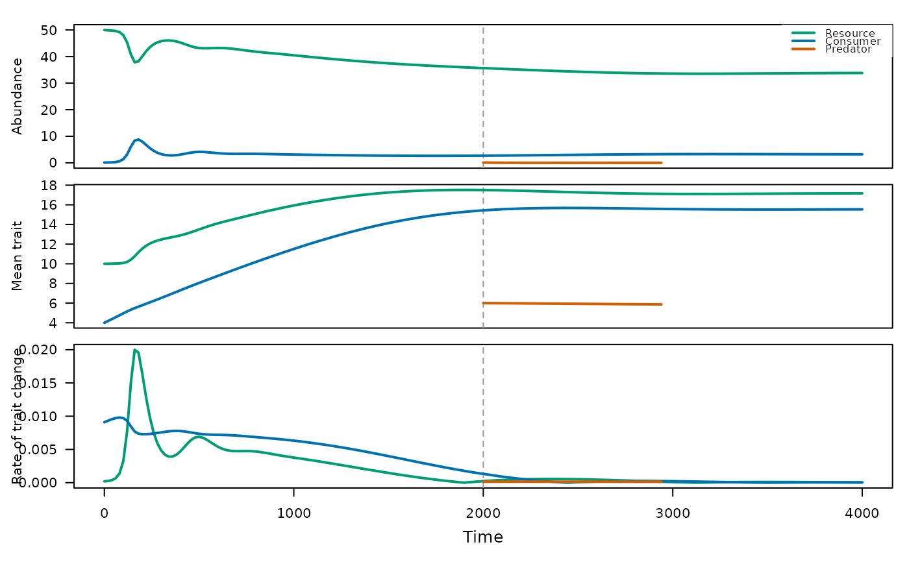
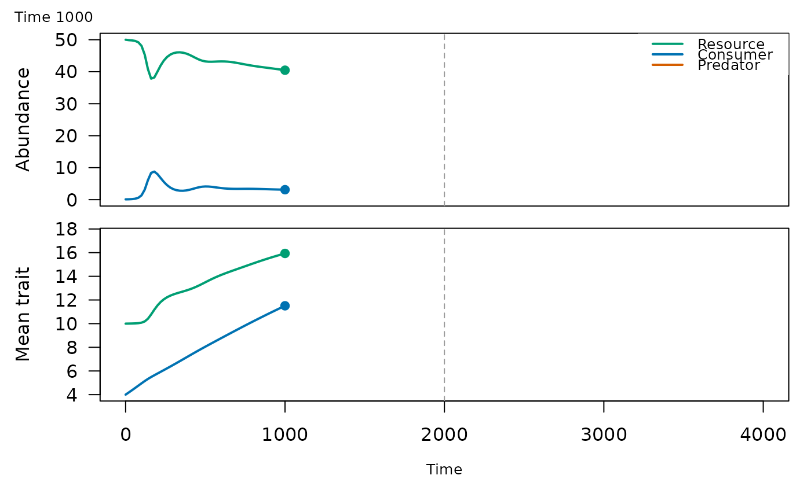

Draws the trajectories from food_web_dynamics() in up to three stacked panels sharing
the time axis: abundances, mean traits and rates of trait change
(\(|d\bar z / dt|\)). Levels that are absent during the whole run are left out, and the
times of introductions are marked by dashed vertical lines.
Arguments
- x
Result of
food_web_dynamics().- panels
Panels to draw, in order: any of
"abundance","trait"and"rate".- time
Optional time at which to stop the curves;
NULLdraws the whole run.- colours
Colours of the resource, the consumer and the predator.
- log_abundance
Draw abundances as their base-10 logarithm (zeros are left out)?
- legend
Draw the legend of the levels?
- linewidth
Width of the lines.
- col, lwd, ...
Deprecated:
colis nowcoloursandlwdislinewidth; graphical arguments of base graphics are no longer used.
Details
With time, the curves stop at that time and a point marks the current state, while the
axes keep the limits of the whole run, so that successive plots are frames of an animation.
animate_food_web() uses this to write a GIF.
See also
animate_food_web(), food_web_dynamics()
Other coevolution in food webs:
animate_food_web(),
food_web_dynamics(),
food_web_params()
Examples
x <- food_web_dynamics(seq(0, 4000, by = 20), init = c(R = 50, N = 0.1, P = 0.1),
traits = c(R = 10, N = 4, P = 6), introductions = c(P = 2000),
dt = 0.5)
plot(x)

# one frame: the state at time 1000, on the axes of the whole run
plot(x, panels = c("abundance", "trait"), time = 1000)
